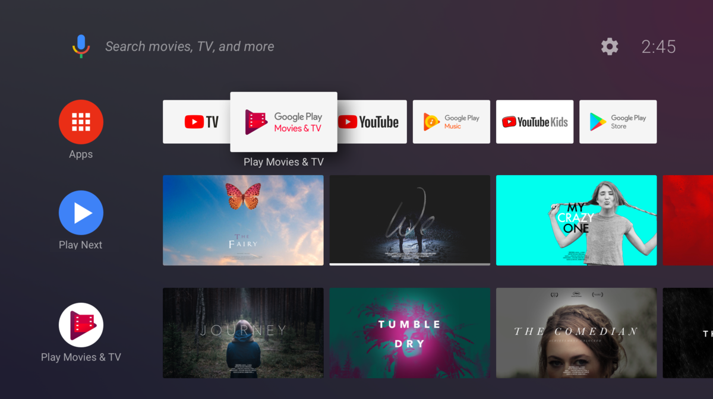
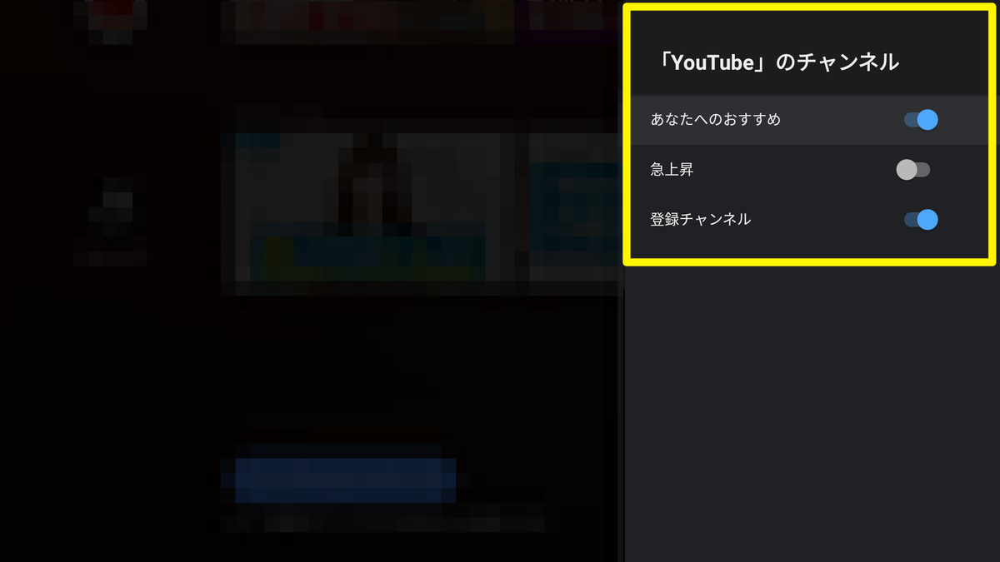
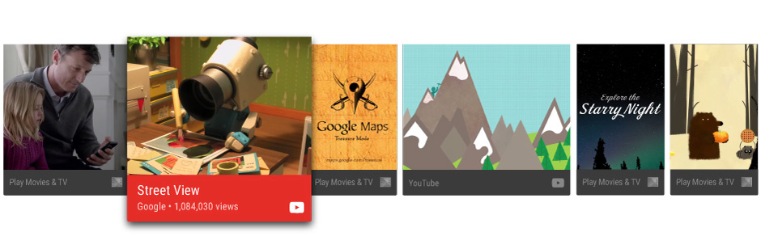

業務でAndroidTVのホーム画面にレコメンドを表示する機能の改修があり、 その中で色々と調べたので少しずつ残していきます。
今回は実装コードはないのであしからず。
AndroidTVデバイスとホーム画面
AndroidTVには、スマホ（Android）のランチャーのような画面はありません。
代わりに、アプリの一覧やアプリがそれぞれ自由におすすめコンテンツを訴求できる枠などが
まとめられたホーム画面が提供されています。
ホーム画面は各行が横にスクロールできるようなUIになっており、 行ごとに一括りにされた情報が列挙されています。
 ホーム画面のチャンネル | Android デベロッパー | Android Developers より引用
アプリの開発者は、仕様に沿っておすすめコンテンツを組み立てContentProviderへ登録する事で、 このホーム画面に任意のコンテンツを並べてユーザへ訴求することができます。
また、これらのおすすめの表示はユーザの操作によって並び順のカスタマイズや、 表示されているコンテンツの削除などができるようになっています。1
ホーム画面でコンテンツを表示できる枠について
開発者がコンテンツを登録することで表示できる場所はいくつか存在します。
以下にそれぞれ簡単にまとめておきます。
Watch Nextチャンネル
このWatch Nextチャンネルは、先に示したホーム画面で2行目の位置に表示されている行です。
このチャンネルはAndroidOSが自動的に作成しており、管理もOSが行っています。
ここには、アプリから視聴途中の動画コンテンツや、それに関連したコンテンツを表示したり、ユーザが自分で操作することで登録されたコンテンツなどが表示されます。
このチャンネルは後述するレコメンデーションチャンネルとは異なり、チャンネル自体の並び順を変えたり、チャンネルを削除したり非表示にしたるすることができないようになっています。
つまり、適切にコンテンツを登録する事で、ユーザにコンテンツを効率よく訴求できると思います。
なぜなら、常にファーストビューにコンテンツが表示されることになるからです。
レコメンデーションチャンネル
Watch Nextチャンネルと比較すると、活用パターンに幅がありそうなチャンネルになります。
こちらはアプリが自由に作成することができるタイプのチャンネルで、チャンネルそのものの登録や削除、更新と言った管理もアプリ側から行うことになります。
チャンネルはいくつでも提供することができます。
例えば、YouTubeアプリの場合は以下のように3つのチャンネルを提供しています。
- あなたへのおすすめ
- 急上昇
- 登録チャンネル

目的やコンテンツのくくりごとなどで適切にチャンネルを作成し、コンテンツを登録してあげることで、ユーザにとって価値のあるホーム画面を構築する手助けができると思います。
Android N以前でのおすすめ表示
旧OSでのおすすめ表示は、ここまで紹介してきたチャンネルという概念がないので、別途開発が必要になります。
今後このおすすめを表示するデバイスは減っていくと思いますが、まだLollipop(API 21)のAndroidTVデバイスが多く存在する以上、こちらの対応も実質的に必須要件になってくることは避けられないと思います。
レコメンデーションチャンネルとの最も大きな違いは、行が1つしかないことです。
アプリごとの行ではなく、全てのアプリが登録したおすすめコンテンツが同じ行に混在する形になります。
 Android N 以前でのおすすめの表示 | Android デベロッパー | Android Developersより引用
登録できる情報に大きな差はないですが、登録するコンテンツの組み立て方などが微妙に異なるので、実装に注意が必要です。
まとめ
とりあえず、AndroidTVでのおすすめコンテンツの訴求方法について簡単にまとめました。
Oreo(API 26)以上か、それ未満かによって表示形式も登録手法も大きく変わります。
今後、Oreo以上のOSを搭載したデバイスが増えていくことは自明だと思いますが、現時点ではOreo未満のデバイスが多く存在しています。そのため、それぞれに合わせた実装を混在させることが求められます。
これがそこそこ面倒です…
ですが、この機能への対応によって得られる訴求効果、特にリテンションに大きく貢献してくれる可能性がとても大きいと思っています。
具体的な実装の手法については、追って記事にしたいと思います。
それでは。
-
ただし、この操作ができるのはAndroid O(API 26)以降のOSを搭載したAndroidTVデバイスに限られます。市場に出回っている製品だと、Android Oよりも古いOSを搭載したデバイスがまだ多いです。 ↩︎